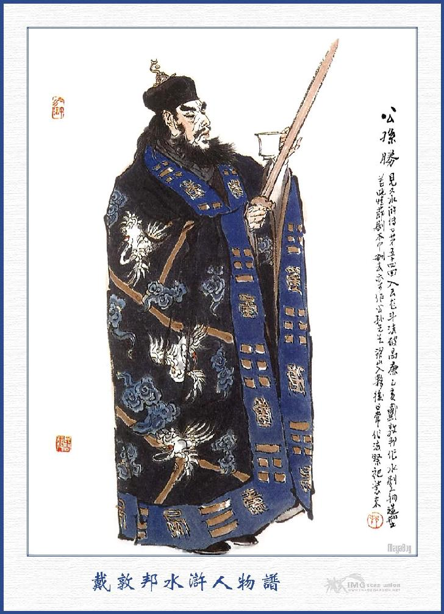
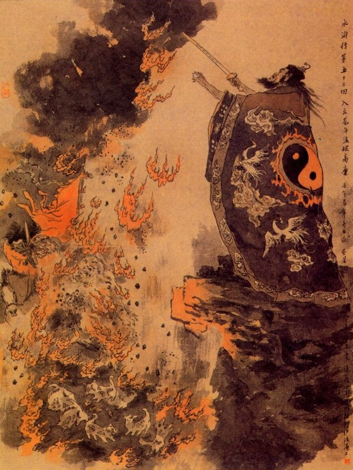
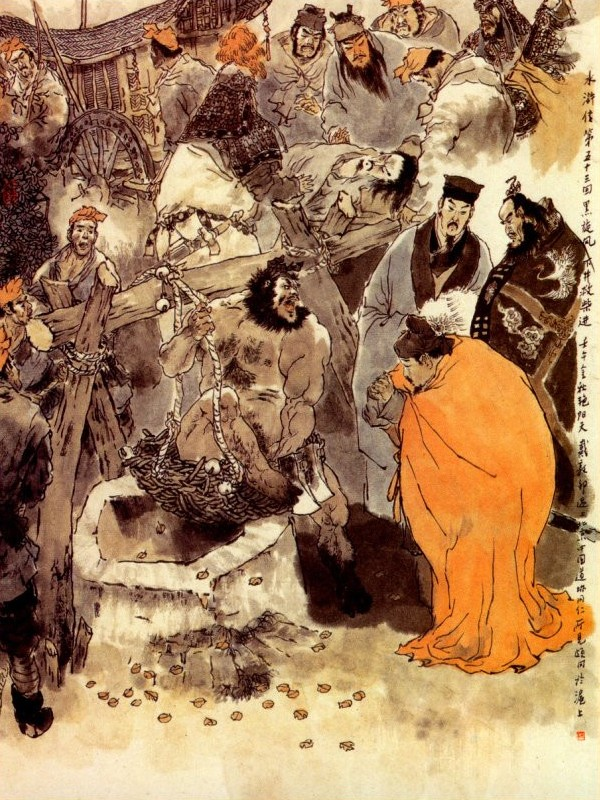
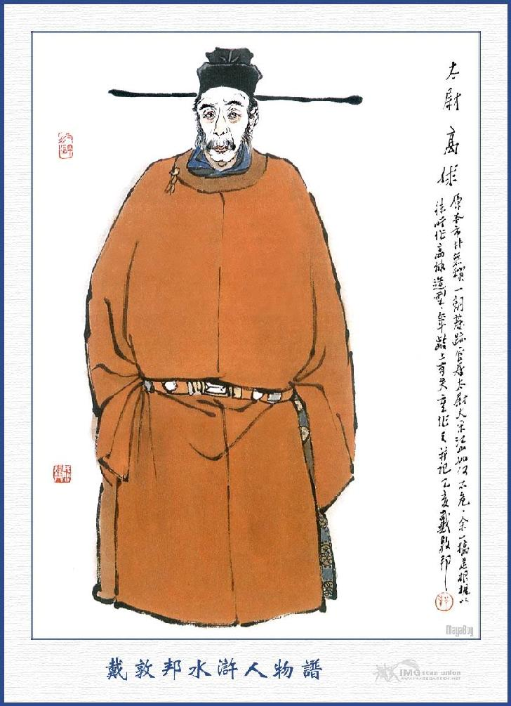
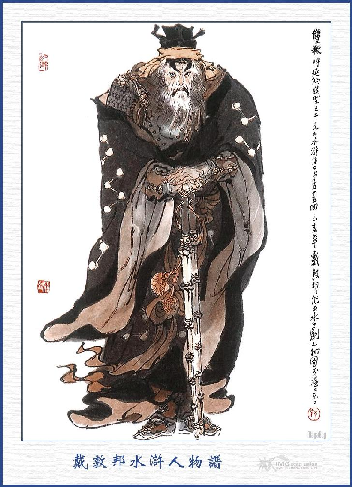

Bấy giờ La Chân Nhân bảo với Công Tôn Thắng rằng:
- Phép thuật của ngươi đối với Cao Liêm cũng không hơn kém gì nhau, song ngày nay ta trao cho ngươi một phép Ngũ Lôi Thiên Tâm, ngươi cứ theo thế mà làm Đạo được. Còn lão mẫu ngươi ở nhà, ta sai người trông nom tử tế, không cần lo nghĩ làm chi. Ngươi cũng là ứng vào Tính số trên trời, nên ta tạm cho ra đó một phen, song trong lòng phải thủy chung giữ lấy lời xưa, chớ bị người ta xui giục mà quên bỏ nghĩa lớn của mình mới được.
Công Tôn Thắng vâng nhận các phép rồi cùng với Đới Tung, Lý Quỳ lạy tạ Chân Nhân và giã từ bạn học mà cùng về nhà tư. Khi về tới nhà, Công Tôn Thắng lấy hai khẩu bảo kiếm, sắp sẵn cái mũ sắt áo đạo, cùng các đồ hành lý rồi biệt thân mẫu mà lên đường.
Đi được bốn mươi dặm đường, Đới Tung bảo với Công Tôn Thắng rằng:
- Bây giờ Tiên Sinh cùng Lý Quỳ đi sau, để tôi về trước báo với Tống Ca Ca rồi cho người đi đón.
Công Tôn Thắng đáp:
- Được lắm, xin hiền đệ cứ báo trước, để tôi đi sau càng tiện.
Đới Tung dặn Lý Quỳ rằng:
- Anh đi đường phải theo mệnh lệnh tiên sinh, nếu có câu gì không phải thì tôi sẽ liệu cho anh.
Lý Quỳ vâng dạ mà rằng:
- Phép thuật tiên sinh cũng như La Chân Nhân vậy, có khi nào tôi dám khinh nhờn, xin Ca Ca cứ đi trước cho.
Đới Tung liền buộc giáp mã làm phép thần hành đi trước, còn Công Tôn Thắng với Lý Quỳ lục đục đi sau. Trong khi đi đường, Lý Quỳ sợ phép thuật của La Chân Nhân; nên hết lòng hầu hạ Công Tôn không hề có việc càn bậy.
Cách vài hôm, đi đến trấn Vũ Cương, thấy cửa nhà đông đúc, Công Tôn Thắng bảo với Lý Quỳ rằng:
- Mấy hôm nay đi đường khó nhọc, nay ta hãy vào uống chén rượu xuông, ăn vài cái bánh chay rồi sẽ đi cũng được.
Lý Quỳ nghe nói lấy làm mừng, bèn tìm vào một hàng rượu ở bên đường để đánh chén. Khi vào tới nơi, Công Tôn Thắng ngồi trên, Lý Quỳ cởi khăn gói ngồi phía dưới rồi gọi nhà hàng dọn rượu lên.
Công Tôn Thắng hỏi nhà hàng rằng:
- Ở đây có bánh điểm tâm chay không?
- Thưa ngài, trong hàng tôi bán rượu thịt, không có bánh chay, duy ngoài chợ có thứ bánh táo là thức ăn chay mà thôi.
Lý Quỳ nói:
- Để tôi đi mua về đây.
Nói đoạn mở gói lấy ít tiền, chạy ra chợ mua bánh. Khi mua xong, đương sắp ra về, chợt thấy bên đường có tiếng người kêu quát lên rằng:
- "Khỏe thực."
Lý Quỳ nghe thấy vậy, vội chạy đến xem thì thấy có đám đông người vây một anh chàng to lớn, đương múa đôi chùy sắt ở đó. Anh chàng ấy mình cao hơn bảy thước, da mặt sần gai, mũi thẳng xuống như dọc dừa, tay cầm chùy sắt, nặng ước ba mươi cân, múa mang một lúc rồi đánh vào hòn đá ở bên đường vỡ hẳn ra. Chúng trông thấy, đều vỗ tay khen ngợi ầm lên, Lý Quỳ thấy vậy, không sao nhịn được, liền dắt bánh vào trong bọc chạy sấn vào giơ tay toan giật lấy chùy sắt của chàng kia.
Chàng kia quát lên rằng:
- Anh là thằng nhắng nào, dám vào dằng lấy chùy của ta.
Lý Quỳ nói:
- Anh múa có ra cái gì. Mà họ khen ầm cả lên?
Để lão gia múa cho xem.
Chàng kia nói:
- Được, ta cho anh mượn hai cây chùy. Nếu không múa nổi thì ta tặng cho mấy quả đấm mà xem.
Lý Quỳ lẳng lặng với lấy cây chùy, múa lên múa xuống, tựa hồ như tung quả đạn tròn, hồi lâu mới đặt xuống mà tinh thần không hề chút gì ra dáng khó nhọc.
Anh chàng kia trông thấy, vội cúi rạp xuống mà lạy rồi hỏi rằng:
- Xin hỏi đại danh Ca Ca là gì?
Lý Quỳ hỏi lại:
- Nhà anh ở đâu?
Anh chàng đáp:
- Nhà tôi ở phía trước gần đây.
Nói đoạn liền dẫn Lý Quỳ đến một nơi cửa khóa then cài cẩn thận rồi lấy chìa khóa mở cửa mời Lý Quỳ vào.
Lý Quỳ vào tới trong nhà toàn thị bễ lò kim khí vất bỏ ngổn ngang trong bụng liền nghĩ thầm: "Anh này ắt hẳn là anh lò rèn; hiện nay trong sơn trại ta cũng cần đến, bất nhược ta rủ hắn đi phắt cho tiện…" Nghĩ vậy liền hỏi:
- Bác tên họ là gì, xin cho tôi biết?
- Thưa ngài: Tôi họ Thang tên Long, thân phụ tôi ngày trước làm nghề thợ rèn, sau gặp Lão Trung Kinh Lược, cho làm quan ở phủ Diên An, mới đây phụ thân tôi bị mất ở chỗ làm quan, tính tôi lại hay dong chơi cờ bạc, nên mới lưu lạc giang hồ, phải tạm trú ở đây để làm nghề thợ rèn kiếm ăn. Tôi có luyện tập được nhiều võ nghệ, song người ta thấy tôi có mụn đen khắp cả quanh mình, nên thường gọi là Kim Tiền Báo Tử (con báo tốt tiền). Vậy dám hỏi quý danh là gì?
- Tôi tức là Hắc Toàn Phong Lý Quỳ ở Lương Sơn Bạc đây?
Thang Long nghe nói, vội vàng cúi lạy mà rằng:
- Chết nỗi! Tôi nghe tiếng đã lâu mà không được biết?
- Anh ở đây làm nghề thợ rèn thì bao giờ cho khá được, bất nhược theo tôi cùng lên Lương Sơn Bạc làm chức Đầu Lĩnh có thú hơn không?
Thang Long hớn hở đáp rằng:
- Nếu quan anh có lòng tốt, cho tiểu đệ theo đi thì còn gì hơn nữa.
Nói đoạn liền bái Lý Quỳ làm anh rồi Lý Quỳ nhận Thang Long làm em.
Thang Long lại nói với Lý Quỳ rằng:
- Nhà tôi không có đầy tớ, xin mời quan anh ra chợ uống vài chén rượu xuông cho tỏ tình thân ái rồi nghỉ đây một đêm, sáng mai sẽ đi.
Lý Quỳ nói:
- Tôi còn có sư phụ ngồi ở đằng kia, để tôi đem bánh về ăn rồi chạy ra ngay bây giờ, không thể nào trì trệ được nữa.
- Vội chi mà phải đi ngay như thế?
- Chết nỗi! Tống Công Minh Ca Ca hiện đương đánh nhau ở đất Đường Châu, còn tôi mời sư phụ về cứu ứng đó.
- Sư phụ là ai?
- Thôi bất tất phải nói anh xếp dẹp đi ngay mới được.
Thang Long vâng lời, vội vàng thu xếp khăn gói, tiền nong khoác nón, giắt dao, cầm thanh đao lớn, vất bỏ cả cửa nhà đồ đạc mà theo Lý Quỳ cùng đi.
Khi đi đến tửu điếm, Công Tôn Thắng trông thấy Lý Quỳ về, bèn có ý gay gắt bảo Lý Quỳ rằng:
- Anh đi đâu đến bây giờ mới về? Giá chậm lúc nữa thì tôi lên núi cho rảnh chuyện.
Lý Quỳ nghe nói lặng ngắt không dám trả lời, liền dẫn Thang Long vào lạy chào mà kể rõ cho Công Tôn Thắng nghe, Công Tôn Thắng thấy vậy cũng có ý vui mừng một chút. Đoạn rồi Lý Quỳ đem bánh ra ba người ăn uống với nhau.
Khi ăn uống xong tính trả tiền hàng rồi Lý Quỳ cùng Thang Long đều khoác khăn gói, theo Công Tôn Thắng về lối Đường Châu. Đi được chừng hai phần đường, đã thấy Đới Tung đến tiếp đón.
Công Tôn Thắng cả mừng, vội hỏi công việc đánh nhau mấy bữa nay ra sao?
Đới Tung nói:
- Mấy hôm nay Cao Liêm đã khỏi vết thương, ngày nào cũng cho quân ra khơi đánh, nhưng Ca Ca phải chịu nhịn, không ra đánh, đành phải đợi tiên sinh đến đã.
Công Tôn Thắng cười rằng:
- Được lắm, để tôi đến sẽ hay.
Lý Quỳ lại dẫn Đới Tung vào chào hỏi rồi kể chuyện cho nghe rồi bốn người kéo Đới Tung cùng đi. Khi gần tới trại, cách năm dặm đường, thấy Lã Phương, Quách Thịnh, dẫn hơn năm trăm bộ, cùng ra đón tiếp. Bấy giờ bốn người cùng lên ngựa rồi trở về Đại Trại.
Tống Giang, Ngô Dụng thấy Công Tôn Thắng về tới nơi, vội vàng hớn hở vui mừng đón vào thăm hỏi rồi cho đòi các Đầu Lĩnh vào đến trướng Trung Quân, để chào mừng Công Tôn Thắng.
Lý Quỳ dẫn Thang Long vào chào Tống Giang, Ngô Dụng, cùng các vị Đầu Lĩnh rồi đặt tiệc ăn mừng, rất là vui vẻ.
Ngày hôm sau, Tống Giang, Ngô Dụng cùng Công Tôn Thắng, bàn việc đánh Cao Liêm.
Công Tôn Thắng nói:
- Xin Chủ tướng truyền cho nhổ trại, kéo cả quân đến, xem thế giặc ra sao rồi tôi sẽ liệu.
Tống Giang nghe lời, bèn truyền cho các trại, hết thẩy đều kéo quân đến gần phủ Cao Đường để dàn quân trận. Khi tới nơi, hạ trại yên ổn, đến sáng hôm sau quân sĩ ăn cơm từ trống canh năm rồi sắp sửa chỉnh tề hết cả. Đoạn rồi Tống Giang, Ngô Dụng và Công Tôn Thắng cưỡi ba con ngựa đóng ra trước cửa trận, thúc cho khua trống phất cờ xông thẳng vào thành để đánh.
Nói về Tri Phủ Cao Liêm mới khỏi được vết thương, nay bỗng thấy có quân mã Tống Giang kéo đến, chàng liền mặc giáp khoác bào, sai mở cửa thành, bỏ đích kiều xuống, dẫn ba trăm thần binh ra thành nghinh địch. Khi tới nơi, đôi bên mở cờ dóng trống, dàn thành trận thế rồi bên kia Tống Giang đứng trước mặt trận, có mười viên tướng cưỡi ngựa đứng hàng ngạng hai bên. Bên tả có năm tướng là Hoa Vinh, Tần Minh, Chu Đồng, Âu Bằng và Lã Phương; Bên hữu năm tướng là Lâm Xung, Tôn Lập, Đặng Phi, Mã Lân và Quách Thịnh. Khoảng giữa ba viên chủ tướng là Tống Giang, Ngô Dụng cùng Công Tôn Thắng đều thắng ngựa đứng nom sang trận Cao Liêm.
Bấy giờ Cao Liêm thét bảo Tống Giang rằng:
- Bây là quân giặc cỏ, ở trong xó rừng vũng nước, nay đã định đánh nhau phải quyết được thua mới được, nếu kinh sợ bỏ chạy thì không phải là hảo hán.
Tống Giang nghe nói, liền hỏi:
- Ai chém thằng giặc kia cho ta?
Nói vừa dứt lời thì Tiểu Lý Quảng Hoa Vinh múa thương phóng ngựa xông thẳng ra ngoài giữa trận.
Cao Liêm thấy vậy, quát lên rằng:
- Ai bắt thằng giặc kia cho ta?
Vừa nói xong thì trong đám quan Thống Chế có một viên Thượng tướng là Tiết Nguyên Huy múa song đao, vỗ ngựa ra đánh với Hoa Vinh, hai bên đánh nhau vừa được vài hiệp, Hoa Vinh liền quay ngựa chạy về bản trận, Tiết Nguyên Huy cũng múa đao phóng ngựa hết sức đuổi theo. Khi đuổi gần tới nơi, Hoa Vinh kìm cương ngựa lại rồi dương cung đặt tên quay nhằm Nguyên Huy bắn một phát ngã xuống ngựa. Hai bên quân lính đều hò reo ầm ĩ cả lên.

CÔNG TÔN THẮNG
Cao Liêm thấy vậy cả giận, liền cầm miếng bài đồng ra tay, lấy kiếm gõ luôn ba tiếng rồi thấy giữa trận thần binh có trận ác phong tung động cát vàng làm cho trời thảm đất sâu, ai ai cũng kinh sợ. Đoạn rồi thấy tiếng reo hò nôn náo, có một toán sài lang hổ báo, cùng các thù trùng độc thú dữ, ở trong đám cát vàng hiện ra.
Bên kia Công Tôn Thắng thấy vậy, liền cầm thanh kiếm Tùng Văn Cổ Định trỏ sang quân Cao Liêm, trong miệng lẩm nhẩm sẽ đọc mấy lời rồi quát một tiếng "Mau". Bấy giờ thấy một đạo kim quang bắn xói sang bên Cao Liêm làm các thú dữ đều phơi phới xuống mặt đất cả. Quân lính cúi xuống nom thì đám trùng độc thú dữ toàn thị bằng giấy trắng cắt ra, bay là xuống đất thì cát vàng cũng nằm im không tung lên được nữa.
Tống Giang thấy vậy, cầm roi vẫy gọi tam quân rồi nhân mã cùng ùa sang đánh giết trong trận Cao Liêm, quân mã Cao Liêm kinh sợ tán loạn, thiệt hại rất nhiều, Cao Liêm bèn kéo thần binh chạy thẳng vào thành để giữ. Quân Tống Giang đuổi đến gần thành, thấy đích kiều đã cất lên, cửa thành đã đóng, trên mặt thành đá gỗ ném xuống như mưa, liền gõ chiêng thu quân trở về đóng trại.
Khi điểm quân mã đều được đại thắng. Tống Giang bèn vào trướng, ta ân đức Công Tôn Thắng và khao thưởng khắp mặt tam quân.
Ngày hôm sau lại chia quân làm bốn mặt quanh thành, Công Tôn Thắng nói với Tống Giang, Ngô Dụng rằng:
- Hôm trước tuy đánh được quân Cao Liêm, song còn ba trăm thần binh chạy cả vào thành, vả chăng ngày nay phải thừa thế mà ra đây cướp trại. Vậy chiều nay ta nên thu quân làm một, đợi đến chiều tối sẽ cho nấp cả các nơi bỏ mặc trại không, cho chúng vào cướp và truyền lệnh cho các quân sĩ cứ nghe tiếng sấm hiệu và trông ngọn lửa ở trong trại bốc lên là phải hết sức đổ ra đánh giết mới được.
Tống Giang nghe lời truyền lệnh cho ba quân, tiến lên đánh thành rồi chiều đến kéo cả về trại. Chiều hôm đó trong trại mở cờ nổi trống, chè chén với nhau, mãi đến chiều tối mới đặt ngũ để ra nấp các nơi. Khi mai phục đã yên tịnh đâu vào đó rồi. Tống Giang, Ngô Dụng, Quách Thịnh, đều kéo nhau lên chỗ gò cao để đợi.
Đêm hôm đó Cao Liêm điểm ba trăm thần binh, mỗi người lưng đeo ống sắt, trong đựng các thức lưu hoàng cùng diêm sinh và một người đều cầm dao trượng gậy móc, miệng ngậm còi, đợi đến canh hai mở cửa thành, kéo quân ra cướp trại. Bấy giờ Cao Liêm dẫn thần binh đi trước, sau lưng có ba mươi tên quân kỵ đuổi theo, cùng nhau thẳng kéo tới trại Tống Giang.
Khi gần tới trại, Cao Liêm ngồi trên mình ngựa làm phép yêu quái, phút chốc đã thấy trời đất đen sì, một trận cuồng phong đổ lá rung cây đưa đến, đoạn rồi ba trăm thần binh thắp lửa vào ống sắt thổi còi làm hiệu, xông xáo kéo vào trong trại.
Bên kia Công Tôn Thắng ngồi trên gò cao trông thấy, liền lễ kiếm làm phép rồi thấy trông giữa trại không bỗng dưng nổi một tiếng sấm rất to, ba trăm thần binh nghe vậy, vừa toan quay gót lui ra, bỗng thấy trong trại lửa đỏ rực trời rồi bốn mặt quân phục đổ ra vây chặt trong trại không còn lối nào mà chạy thoát.

Bấy giờ ba trăm thần binh, đều bị quân mã Tống Giang giết hết, không sót một người, Cao Liêm liền dẫn ba mươi quân kỵ chạy trốn về thành.
Vừa chạy được mấy bước, đã thấy Báo Tử Đầu Lâm Xung, dẫn một toán quân mã đuổi sát rạt đằng sau, Cao Liêm vội vàng gọi mở cửa thành, bỏ đích kiều xuống, dẫn được tám chín quân kỵ, chạy thoát vào thành. Còn mấy mươi tên nữa, đều bị Lâm Xung bắt sống được cả.
Cao Liêm vào trong thành, liền đốc thúc dân chúng để coi giữ trong thành, rất là cẩn thận.
Ngày hôm sau Tống Giang lại đến vây đánh thành rất dữ. Cao Liêm nghĩ thầm rằng: "Bấy lâu học được pháp thuật, vẫn tưởng hơn đứt người, ai ngờ ngày nay, lại còn có kẻ cao hơn nữa, như thế thì còn biết tính làm sao? Nay bất nhược phải mau mau viết thư sang hạt Đông Xương và hạt Khấu Châu để cầu cứu mới được. Hai hạt đó gần đây, vả chăng hai ông Tri Phủ đó, đều là môn đệ của Ca Ca ta thì tất nhiên họ phải đến cứu không sai." Nghĩ đoạn viết hai phong thư, sai hai quan Thống Chế mở cửa thành bên Tây, để cướp đường đi cầu cứu.
Bên kia các tướng của Tống Giang thấy người trong thành đi ra, đã toan đuổi theo để bắt.
Ngô Dụng gạt đi mà rằng:
- Mặc cho họ đi, ta sẽ dùng mẹo mà bắt mới thú.
Tống Giang hỏi:
- Quân Sư định làm thế nào?
Ngô Dụng nói:
- Hiện nay trong thành tất là binh nguy tướng ít, nên mới sai người ra đi cầu cứu. Vậy ta giả làm hai đội quân mã đến ứng cứu rồi đánh nhau lộn bậy ở ngoài, để cho hắn mở cửa thành ra tiếp ứng, Bấy giờ thừa thế đánh tràn vào đí thì thế nào cũng bắt được Cao Liêm.
Tống Giang nghe cả mừng, liền sai Đới Tung về Lương Sơn Bạc lấy hai toán quân mã, chia làm hai đường để đến đánh Cao Đường.
Về phần Cao Liêm sau khi sai người đi cầu cứu viện, đêm đêm thường đốt lửa sáng rực trong thành để làm hiệu, đợi viện binh kéo đến. Cách mấy hôm trời, đám quân lính canh thành, bỗng thấy quân mã Tống Giang tự nhiêu rối loạn xôn xao, bèn vội vàng báo cho Cao Liêm biết.
Cao Liêm nghe báo, lập tức đóng áo mũ lên mặt thành để xem. Bấy giờ có hai toán quân mã xung đột tung hoành, bụi mù rợp đất, đánh giết luôn tay. Làm cho bọn giặc vây thành, đều bỏ tan mà chạy cả.
Cao Liêm thấy vậy, biết là viện quân đã đến, bèn điểm hết nhân mã trong thành, mở tung hết cả cửa thành, chia làm bốn mặt mà ùa ạt đánh ra.
Khi ra tới ngoài thành, Cao Liêm xông xáo đánh trận Tống Giang. Tống Giang, Hoa Vinh, Tần Minh cưỡi ba con ngựa, theo lối đường nhỏ mà chạy; Cao Liêm thúc quân mã đuổi riết để bắt. Đương khi đó có pháo nổ liên thanh, Cao Liêm lấy làm nghi sợ, bèn thu quân toan chạy trở về.
Bỗng đâu hai bên đường nổi tiếng thanh la ầm ĩ rồi bên tả có Tiểu Ôn Hầu, bên hữu có Kiển Nhân Quý, đều dẫn năm trăm nhân mã xông ra, Cao Liêm cướp đường cố chạy, quân mã bị thiệt hại tới quá nửa. Khi chạy thoát được vòng trận về cổng thành, ngẩng lên trông thành đã thấy toàn thị hiệu cờ của Lương Sơn Bạc cả.
Cao Liêm kinh hoàng liếc mắt trông quanh không thấy có toán viện quân đâu nữa, chàng bất đắc dĩ phải dẫn đám quân, tìm đường lối hẻm trong núi mà chạy.
Chạy được mươi dặm đường, chợt thấy có một toán quân sĩ ở trong núi kéo ra; rồi thấy Bệnh Úy Trì ngăn cản giữa đường mà quát lên rằng:
- Chúng ta đợi đây đã lâu, muốn sống xuống ngựa đi thôi.
Cao Liêm thấy vậy, lại dẫn quân quay lại, bỗng lại thấy Mỹ Nhiêm Công dẫn một toán quân sĩ chắn ngang lấp đường rồi hai bên cùng xông vào để đánh. Cao Liêm thấy đường đi lối lại, đều mắc nghẽn cả, bèn bỏ ngựa xuống bộ rồi lần lên núi để trốn. Bọn kia lại xông lên núi đuổi theo. Cao Liêm vội niệm mấy câu thần chú trong miệng rồi quát lên một tiếng "Lên" rồi cưỡi lên một đám mây đen phất phơ trên đỉnh núi.
Khi đó Công Tôn Thắng đứng bên sườn núi thấy vậy, bèn ngồi trên mình ngựa, cầm thanh kiếm làm phép, quát lên một tiếng "Mau" rồi trỏ thanh kiếm lên thì thấy Cao Liêm ở giữa đám mây, rơi tung ngay xuống trước mặt Lôi Hoành, Lôi Hoành tiện tay chém một đao đứt làm đôi đoạn rồi xách thủ cấp xuống núi.
Tống Giang nghe nói giết được Cao Liêm, bèn thu quân kéo vào trong thành Cao Đường, trước hết hạ lệnh, không cho xâm phạm dân gian và yết bảng cho dân được yên việc làm ăn, đoạn rồi đến nhà lao để cứu Sài Đại Quan Nhân.
Bấy giờ Tiết Cấp cùng các lính ngục đều chạy trốn mọi nơi, duy còn bốn năm mươi tên tù còn sót lại. Tống Giang lại sai tháo gông mà tha cho tất cả mọi người mà không thấy Sài Tiến ở đấy. Tống Giang cho tìm khắp mọi nơi. Sau thấy có vợ con Sài Hoàng Thành, cùng vợ con Sài Tiến đều bị giam vào hai phòng riêng mà Sài Tiến lại không thấy, nên trong lòng buồn bã vô cùng.
Quân Sư Ngô Dụng cho đòi tất cả các người làm việc ở châu Cao Đường đến để hỏi. Sau có một người Tiết Cấp tên là Lạn Nhân nói rằng:
- Bữa trước Tri Phủ Cao Liêm, bắt chúng tôi phải giam giữ rất là cẩn thận và có dặn chúng tôi, nếu lỡ có xảy ra sự gì thì cứ đem giết ngay Sài Tiến đi trước. Cách đây ba hôm Phủ lại thúc đem Sài Tiến ra để hành hình, chúng tôi thấy người đó ra vẻ tuấn tú khôi ngô, nên người chí khí, mới không nỡ ra tay mà nói dối là Sài Tiến đã ốm gần chết đến nơi không cần phải giết. Sau Tri Phủ thúc giục luôn, tôi đã phải nói dối là Sài Tiến chết rồi. Đoạn rồi trong mấy hôm đánh nhau bận rộn, nên Tri Phủ cũng không hỏi gì đến nữa. Sau lại sợ người bới vẽ đến tai Tri Phủ, nên hôm qua tôi đem Sài Tiến ra chỗ giếng khô ở phía sau, tháo gông cho nấp xuống đó. Nay không biết có còn hay không.
Tống Giang nghe nói, vội bảo Lạn Nhan dẫn ra đi xem. Khi tới nơi, nom xuống dưới giếng, thấy tối đen mịt mù, không biết sâu nông thế nào, cho người đứng trên kêu gọi thì thấy dưới giếng im phắc như tờ, không có ai trả lời cả. Sau thòng dây xuống để đo, mới biết giếng sâu có tới chín trượng.
Tống Giang thấy vậy, rân rấn hai hàng nước mắt mà nói rằng:
- Nếu vậy thì Sài Đại Quan Nhân nguy mất rồi.
Ngô Dụng nói:
- Xin Chủ Tướng thư tâm, để cho người xuống đó dò xét xem sao?
Ngô Dụng vừa nói dứt lời thì Hắc Toàn Phong Lý Quỳ chạy đến mà kêu lên rằng:
- Để tôi xuống cho.
Tống Giang nói:
- Được lắm! Chính ngươi làm hại Sài Đại Quan Nhân khi trước, nay ngươi nên xuống cứu mới phải.
Lý Quỳ cười nói rằng:
- Tôi xuống đó cũng không sợ gì, nhưng ở trên này đừng cắt dây mới được.
Ngô Dụng nói:
- Sao anh láu thế? Ai đã phản anh mà sợ?
Nói đoạn sai người lấy thừng lớn, buộc hai bên cạnh nối đầu thừng rất dài, đặt một cây tre trên miệng giếng rồi quăng dây thừng lên đó. Đoạn rồi Lý Quỳ cởi trần trùng trục, tay cầm song phủ ngồi vào trong thúng, buộc hai cái chuông bên cạnh thúng rồi người đứng trên dong dây cho Lý Quỳ xuống giếng.

Khi xuống tới đáy giếng, Lý Quỳ ra lần mò sờ soạng, bất đồ vớ phải đống xương, Lý Quỳ kêu một mình lên rằng:
- Ối cha mẹ! Cái quái gì mà gớm ghê như vậy?
Chàng lại sờ quanh sờ quẩn, thấy giữa lòng giếng, đầy những bùn lầy không sao bước chân xuống được, Lý Quỳ để đôi song phủ vào thúng rồi với đôi tay ra giếng để lần xem.
Chàng lần mãi, sau thấy một người nằm cuộn tròn trong vũng nước, Lý Quỳ lại kêu lên rằng:
- Sài Đại Quan Nhân.
Kêu dứt lời thì thấy người kia trả lời, chàng liền giơ tay vào mũi để xem thì thấy vẫn còn thoi thóp thở.
Chàng thấy vậy, nói lẩm bẩm một mình:
- Lạy trời đất cứ thế này thì còn có cơ cứu sống lại đây.
Nói đoạn lại nhảy vào trong thúng lắc chuông ra hiệu cho ở trên biết. Trên kia nghe thấy chuông hiệu, vội vàng cố kéo thúng lên. Khi lên tới nơi, chỉ thấy một mình Lý Quỳ, Tống Giang lấy làm kinh ngạc mà hỏi. Lý Quỳ rõ mọi sự ở dưới giếng, cho Tống Giang nghe.
Tống Giang nói:
- Nếu vậy thì người lại phải xuống đó, đặt Sài Đại Quan Nhân vào thúng, để kéo lên trước rồi sẽ thông thúng xuống kéo người lên sau.
Lý Quỳ nói:
- Thôi, Ca Ca không biết. Tôi đi Kế Châu đã gặp hai lần rất nguy hiểm, nay chả lẽ lại chịu lần nguy hiểm thứ ba nữa!
Tống Giang cười rằng:
- Có lẽ ta lại đùa ngươi hay sao? Ngươi cứ xuống đi mới được.
Lý Quỳ vâng lời, lại ngồi vào thúng rồi trên này dòng dây cho xuống giếng. Lý Quỳ ẵm Sài Tiến bỏ vào trong thúng, lắc chuông ra hiệu cho kéo lên. Chúng kéo được Sài Tiến lên tới nơi, ai nấy đều mừng rỡ vô cùng, khi trông thấy Sài Tiến bị đầu trán sứt sẹo, hai bên đùi nát nhừ da thịt, hai con mắt chỉ lim dim không mở ra được thì mọi người lại thảm thiết xót thương, sai người đi mời thầy về chữa ngay lập tức.
Bấy giờ Lý Quỳ ở dưới giếng, đợi lâu không thấy thòng thúng xuống, chàng lấy làm sốt ruột, kêu la ầm ĩ cả lên, Tống Giang nghe tiếng, bảo dòng mau dây xuống để đón Lý Quỳ.
Lý Quỳ lên tới nơi phát bẳn mà rằng:
- Các ông như thế không tốt, sao không thòng dây xuống ngay là nghĩa lý gì?
Tống Giang nói:
- Vì mãi trông Sài Đại Quan Nhân, nên quên khuấy đi mất. Thôi, nhà ngươi bằng lòng vậy.
Nói đoạn sai người vực Sài Tiến lên nằm trên xe rồi đoạn vợ con Sài Tiến cùng vợ Sài Hoàng Thành, cùng các đồ gia tài xếp hơn hai mươi cỗ xe, sai Lý Quỳ, Lôi Hoành hộ tống đem về sơn trại.
Đoạn rồi bắt cả nhà Cao Liêm hơn ba mươi người, đều chém đầu ra lệnh mà thưởng cho tên Lạn Nhân, Lại truyền lấy của trong kho, cùng tài sản của nhà Cao Liêm, xếp cả lên xe rồi đông mặt trảm quan, kéo cờ đắc thắng trở về Lương Sơn Bạc. Khi đi qua các châu quận, không hề động lấy tơ hào của dân, ai ai cũng lấy làm kính phục.
Tiều Cái cho mời Sài Tiến lên nghỉ ở chỗ Tống Công Minh trên núi và sai làm một dinh cơ khác, cho gia quyến Sài Tiến ở. Bấy giờ sơn trại lại thêm có Sài Tiến cùng Thang Long thì ai nấy đều vui vẻ, liền đặt tiệc ăn mừng, rất là thoả thích.
Nói về phủ Đông Xương cùng phủ Khấu Châu, biết tin Cao Đường đã mất, cả nhà Cao Liêm bị chết hết, bèn cùng nhau thảo sớ, lập tức về triều đình. Sau các quan chức ở Cao Đường cùng chạy thốc về kinh, để tâu báo cho triều đình biết.
Cao Thái Úy biết tin anh em là Cao Liêm bị giết, lấy làm căm tức trong lòng, liền hăm hở vào triều để tâu cùng Thiên Tử.
Sáng hôm sau đó, khi lầu Cảnh Dương chuông động, các quan văn võ đều chỉnh tề triều phục, bước vào đan trì để chầu Thiên Tử.
Được một lát, Thiên Tử ngự ngôi chính diện, có quan Điện Đầu tuyên bố rằng:
- Các quan có việc gì cần vào tâu, bằng không xin để tan chầu.
Vừa dứt tiếng thì thấy Cao Cầu ra quỳ trước ban tâu rằng:
- Nay có bọn giặc ở Lương Sơn Bạc, thuộc phủ Tế Châu, mấy tên đầu đảng là Tiều Cái, Tống Giang, xưa nay tụ họp đại gian đại ác, chỉ chuyên nghề cướp hại lương dân, đánh phá phủ, huyện, càn dở buông dông, không biết tới đâu mà kể. Năm trước đã đánh giết quan quân ở phủ Tế Châu, đánh phá thành Giang Châu, cùng thành Vô Vi rất là tàn ác. Nay lại đánh châu Cao Đường giết hại quan dân, cướp lấy kho tàng làm cho trăm họ phải chịu lầm than, đó là một cái vạ lớn của nhà nước hiện nay, nếu không sớm liệu trừ ngay, mai sau tất là khó trị. Vậy xin thánh thượng xét cho.
Vua nghe tâu cả kinh, bèn truyền chỉ cho Cao Thái Úy lập tức điều binh khiển tướng trừ bọn giặc Lương Sơn.
Cao Cầu lại tâu rằng:
- Đám đó tuy vậy cũng là một bọn giặc cỏ, bất tất phải lấy đại quân cho phí tổn quốc gia. Nay tôi xin cắt một người này, có thể khu trừ ngay được.
Vua nói:
- Khanh định cắt người nào ra đó, xin cứ truyền lệnh cho đi, sau đây đánh giặc có công, ta sẽ gia phong tước thưởng.
Cao Thái Úy tâu rằng:
- Người này là con cháu một vị danh thần khai quốc. Hô Diên Tán ở Hà Đông, tên là Hô Diên Chước, khiến hai cậy roi đồng, sức khỏe muôn người không kịp, hiện làm Đô Thống Chế ở quận Nhữ Vinh, trong tay sẵn có quân tinh tướng giỏi, có thể đánh nổi được giặc Lương Sơn. Nay xin phong người đó làm Binh Mã Chỉ Huy Sứ, lãnh các quân mã bộ, lập tức ra đó chinh tiễu thì thế nào cũng được thành công.
Vua nghe nói lấy làm vui mừng, bèn giao cho Viện Cơ Mật, sai Sứ thần vâng mang sắc chỉ lập tức ra đất Nhữ Nam mời Hô Diên Chước về kinh phụng mạng.
Khi Sứ thần đi đến Nhữ Nam, Hô Diên Chước cùng các quan trong thành ra nghinh đón thánh chỉ, đem về tuyên đọc rồi tiếp đãi Sứ thần rất là trân trọng. Đoạn rồi lập tức thu thập các đồ mũ mãng đai giáp cung tên gươm ngựa và dẫn ba bốn mươi tên thủ hạ, gấp đường về chốn kinh sư.

CAO THÁI ÚY (CAO CẦU)

HÔ DIÊN CHƯỚC
Cách mấy hôm về đến kinh sư, Hô Diên Chước đến điện Tư Phủ để chào Cao Thái Úy. Hôm đó Cao Cầu đương ngồi trên súy phủ, nghe báo Hô Diên Chước đã về thì trong bụng lấy làm vui mừng hớn hở, lập tức cho mời vào nói chuyện. Khi Hô Diên Chước vào tới nơi Cao Thái Úy đem lời uyển ủy hỏi thăm rồi đem các đồ thưởng tứ ra cho rồi sáng sớm hôm sau mới dẫn vào chầu Thiên Tử.
Thiên Tử trông thấy Hô Diên Chước tướng mạo đường đường, ra dáng một tay dũng lược thì trong bụng rất vui mừng hớn hở, liền ban cho một con ngựa Tích Tuyết Ô Truy, ngày đi ngàn dặm là một giống ngựa hiếm có xưa nay.
Hôm đó Hô Diên Chước vâng lời tạ ơn vua rồi theo Cao Thái Úy trở về súy phủ, để bàn việc khởi binh, Hô Diên Chước nói với Cao rằng:
- Dám bẩm ân tướng, tôi xem bọn Lương Sơn Bạc, binh nhiều tướng giỏi, ngựa mạnh lương nhiều, không thể vội khinh ngay được. Vậy tôi xin tiến cử hai tướng làm Tiên Phong, để cùng đi ra đó thì mới có thể khu trừ được giặc, chẳng hay ân tướng nghĩ sao?
Cao Thái Úy gật đầu khen phải, liền ân cần hỏi Hô Diên Chước xem định tiến cử những ai?
Mới hay:
Một phen huyết chiến dậy trời,
Giết quân tàn bạo, cứu người oan khiên,
Xưa nay tài trí lương liên,
Mà cân họa phúc hoàng thiên cũng già.
Ấy ai gậy cuộc phong ba,
Hao binh tốn tướng dễ mà ích chi?
Con thuyền ngang dọc Liêu Nhi?
Giang san này biết nặng vì ai đây?
Lời bàn của Thánh Thán
Sau khi mời được Công Tôn Thắng, ba người cùng về, phải rồi. Đới Tung lại bỗng đâu về trước, để làm cho Lý Quỳ có chuyện mua bánh táo chay, Lý Quỳ mua bánh táo chay, để mà nảy ra biết được Thang Long, Lý Quỳ kết thức được Thang Long, để mà sau này có chuyện chế tạo ra câu liêm đánh giặc. Ôi! Chế ra câu liêm để phá trận Liên Hoàn Mã, trận Liên Hoàn Mã tới đây, chính để báo thù cho Cao Liêm vậy. Vì Cao Liêm chết do tay Công Tôn Thắng, nay Công Tôn Thắng chưa tới thì Cao Liêm chưa chết. Cao Liêm chưa chết thì Cao Cầu cũng chưa gọi Hô Diên Chước, Cao Cầu chẳng gọi Hô Diên Chước thì không có trận Liên Hoàn Mã, nếu không xảy ra trận Liên Hoàn Mã, tất không cần đến Thang Long vậy. Nay Lý Quỳ mới dự kết thức, vì kết thức, ở chỗ mua bánh táo, vì mua bánh táo, cho nên Đới Tung dự đi lòng văn luẩn quẩn đến như thế, khiến quỷ thần không thể lường ra.
Tả Công Tôn Thắng thần công đạo pháp, chỉ ít nhiều bút mực tả ra, chẳng phải dùng sức phô trương chỉ có cách hơn người một bực.
Tả Công Tôn phá Cao Liêm, Cao Liêm nếu một trận mà thua thì đâu có nổi bậc tài của Công Tôn Thắng? Mới phải dùng đến hai phen mấy ngày, lại giở nốt tài của Cao Liêm, theo đuổi lần trước cướp trại với một thế ấy để lần sau lại bị bất ngờ, nhân đó mà quét sạch đi, chẳng coi là thường, chẳng lấy làm trọng, càng thấy rất phải.
Lần trước cướp trại do thừa thắng, lần sau cướp trại lại nhân bại trước sau cướp trại hai lần, lấy đó phân biệt, thế thì thực ra tác giả tả lần cướp trại sau, để che lấp dấu bút vết mực trước, như trên bàn đã rõ ra. Hồi này chỉ chép lớn ra chiến công của Lâm Xung, chính vì nghĩa xóa sạch công án với thù họ Cao, chẳng phải bút mực phải tả vậy. Thái Sử Công nói rằng: Gây oán độc với người tệ hại thay! Chẳng là phải ư?
Lý Quỳ là người thô mãng, tuy hết sức tả ra, nhưng không tả nổi, hồi này cốt chép Lý Quỳ thô mãng, lật lại con người gian hoạt, khiến cho đời thấy chất phát càng thấy không ngoan, mới thực chuyện kỳ.
Cổ thi nói rằng: Nước giếng đâu biết gió trời, ý non nước dưới giếng sâu, gió không động tới, thế mà hảo hán ngọn Toàn Phong (Gió Lốc) đề sa vào dưới đáy giếng khô ở đất Cao Đường, câu ngụ ngôn với ý bấy giờ cái ác Cao Giang nhiễu loạn, không còn để sót chút nào?
Cuối hồi miêu tả vua cho ngựa Tích Tuyết Ô Truy chỉ ba bốn câu mà chú trọng đến đọc thành một thiên tuyệt diệu về bài phú ngựa.